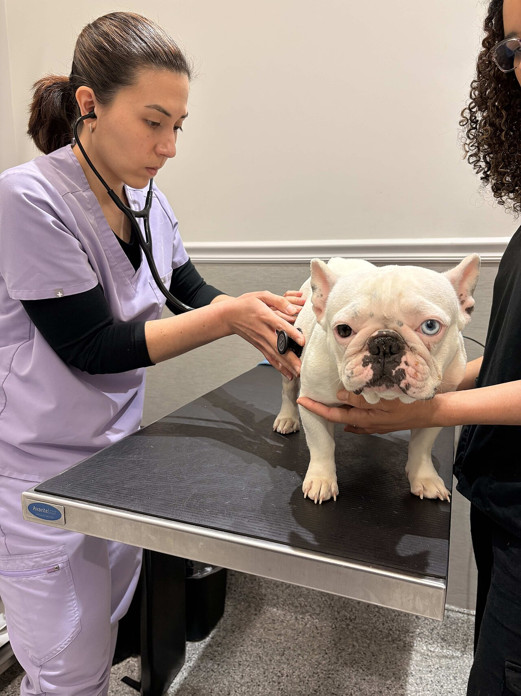

Misión
Dar atención veterinaria de calidad a un precio justo, cuidando el bienestar de cada mascota y la tranquilidad de su familia.

Huellitas nació en 2014 cuando la doctora Mariana López abrió un consultorio de una sola sala en el centro de la ciudad. Al principio atendía sola y casi todos sus pacientes eran perritos rescatados del barrio.
Con el tiempo llegaron más médicos y más equipo, y hoy somos una clínica completa con quirófano, laboratorio, estética y servicio de urgencias toda la noche.
Lo que no ha cambiado es la forma de trabajar, explicamos todo con calma a los dueños y tratamos a cada mascota con paciencia.
Dar atención veterinaria de calidad a un precio justo, cuidando el bienestar de cada mascota y la tranquilidad de su familia.
Ser la clínica veterinaria de confianza en Querétaro y promover la tenencia responsable de mascotas.
Respeto por los animales, honestidad con los dueños, trabajo en equipo y aprendizaje constante.
Da clic en una tarjeta para conocer un poco más de cada uno.
Directora
Especialista en medicina interna, fundó la clínica en 2014.
Cirujano
Encargado del quirófano y de las cirugías de tejidos blandos.
Felinos
Atiende a los gatos en un consultorio especial sin ruido de perros.
Urgencias
Coordina el turno nocturno y el servicio de urgencias.